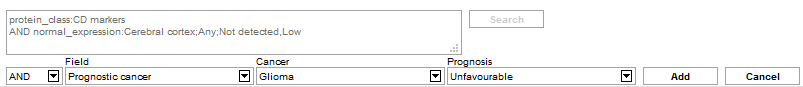
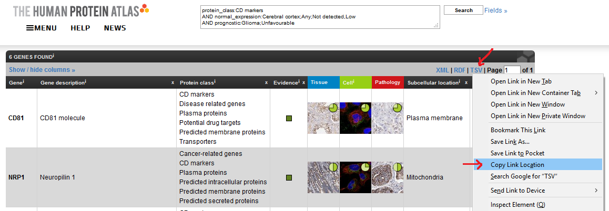
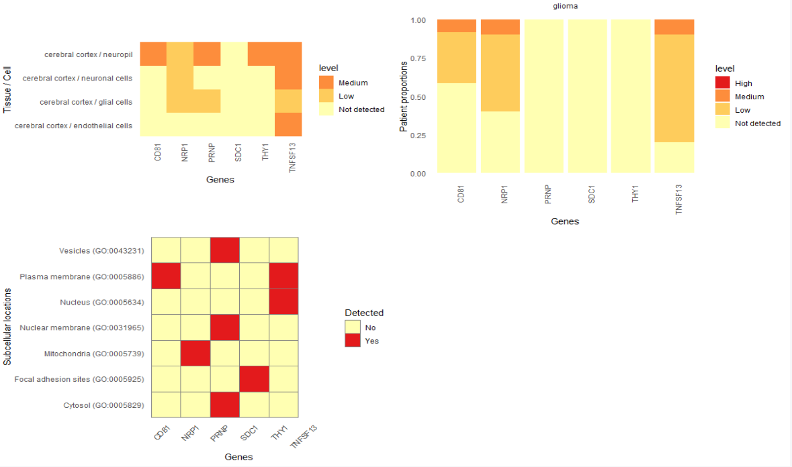

3. Tutorial: Combine HPAanalyze with your Human Protein Atlas (HPA) queries
Anh N. Tran
DataGrata LLCtrannhatanh89@gmail.com
5/27/2025
Source:vignettes/c_HPAanalyze_case_query.Rmd
c_HPAanalyze_case_query.RmdThe case
The Human Protein Atlas web interface provides a powerful way to search using specific parameters. For example, you can find proteins predicted to be secreted, expressed at low level in normal breast tissue and are predictors of poor prognosis in breast cancer. The good news: you can combine the results of your queries with HPAanalyze for easy explanatory data analysis and data retrieval of your proteins of interest. Here is how.
The solution
Create your query
Have a specific goal in mind. What are you looking for? In this example, I will look for CD markers that have low expression in the cerebral cortex and correlate with unfavorable prognosis in glioma.
Build your query. The most intuitive way is to click on the “Fields >>” button and use the drop-down menus.
The ‘Fields >>’ button.

Build your query with the drop-down menus.
- Click “Search”. The website will show you a list of proteins that match your parameters.
Click the ‘Search’ button.
- Copy the link to the tsv file that summarizes your search.
(Alternatively, you can just add
?format=tsvto your search link.)

Copy the link to the tsv file.
- Import the tsv file as a data frame as below:
## The link to your query tsv
my_hpa_query <- "https://www.proteinatlas.org/search/protein_class%3ACD+markers+AND+normal_expression%3ACerebral+cortex%3BAny%3BNot+detected%2CLow+AND+prognostic%3AGlioma%3BUnfavourable?format=tsv"
## Create a temporary file as destination for the download
temp <- tempfile("query", fileext=c(".tsv.gz"))
## Download to the temporary file
download.file(url=my_hpa_query, destfile = temp, method = "curl", mode = "wb")
## read the file into a data frame
query_df <- readr::read_tsv(temp)
## Unlink the temp file
unlink(temp)Note: If you have problem downloading file in R (step 5), you can workaround by manually download the tsv.gz file from your browser, unzip with 7zip or WinRAR and import the resulting tsv file.
You will end up with a data frame that looks like this.
tibble::glimpse(query_df)
#> Observations: 6
#> Variables: 22
#> $ Gene <chr> "CD81", "NRP1", "PRNP", "SDC1", "THY...
#> $ `Gene synonym` <chr> "TAPA-1, TAPA1, TSPAN28", "CD304, NR...
#> $ Ensembl <chr> "ENSG00000110651", "ENSG00000099250"...
#> $ `Gene description` <chr> "CD81 molecule", "Neuropilin 1", "Pr...
#> $ Chromosome <dbl> 11, 10, 20, 2, 11, 17
#> $ Position <chr> "2376177-2397419", "33177492-3333626...
#> $ `Protein class` <chr> "CD markers, Disease related genes, ...
#> $ Evidence <chr> "Evidence at protein level", "Eviden...
#> $ Antibody <chr> "CAB002507, HPA007234", "CAB004511, ...
#> $ `Reliability (IH)` <chr> "Supported", "Approved", "Enhanced",...
#> $ `Reliability (Mouse Brain)` <lgl> NA, NA, NA, NA, NA, NA
#> $ `Reliability (IF)` <chr> "Supported", "Uncertain", "Approved"...
#> $ `Subcellular location` <chr> "Plasma membrane", "Mitochondria", "...
#> $ `Prognostic p-value` <chr> "Glioma:5.12e-5 (unfavourable), Panc...
#> $ `RNA cancer category` <chr> "Expressed in all", "Expressed in al...
#> $ `RNA tissue category` <chr> "Expressed in all", "Expressed in al...
#> $ `RNA TS` <lgl> NA, NA, NA, NA, NA, NA
#> $ `RNA TS TPM` <chr> NA, NA, NA, "esophagus: 250.7;skin: ...
#> $ `TPM max in non-specific` <chr> "seminal vesicle: 2273.0", "placenta...
#> $ `RNA cell line category` <chr> "Cell line enhanced", "Cell line enh...
#> $ `RNA CS` <lgl> NA, NA, NA, NA, NA, NA
#> $ `RNA CS TPM` <chr> "ASC diff: 2031.3", "U-87 MG: 437.4"...The data frame itself is somewhat informative, and is adequate if you
want to see a summary of the data. However, it also provides you with a
list of proteins in both “gene name” and “ensembl id” formats which you
can use with HPAanalyze functions.
Visualization
You can use the gene names in the list to visualize HPA data with the
hpaVis function family. No special adjustment is
needed.
## since the query give you the latest HPA version, get the latest datasets to match
latest_datasets <- hpaDownload()
hpaVis(data = latest_datasets,
targetGene = query_df$Gene,
targetTissue = "cerebral cortex",
targetCancer = "glioma")
XML extraction
Similarly, you can extract the information you want from relevant xml
files using lapply on the ensembl ids. With some trickery,
you can even create a tidy data frame from the extracted information, as
shown below. Now you can analyze the way you want.
## Download and import the xml files for proteins of interest
query_xml_list <- lapply(query_df$Ensembl, hpaXmlGet)
## Extract protein classes as a list of data frame
query_protein_classes <- lapply(query_xml_list, hpaXmlProtClass)
names(query_protein_classes) <- query_df$Gene # name list items
## Turn the list into a data frame
query_protein_classes_df <-
tidyr::unnest(tibble::enframe(query_protein_classes, name = "protein"))
glimpse(query_protein_classes_df)
#> Observations: 122
#> Variables: 5
#> $ protein <chr> "CD81", "CD81", "CD81", "CD81", "CD81", "CD81", "CD81"...
#> $ id <chr> "Cd", "Ja", "Jf", "Ma", "Md", "Me", "Mf", "Mg", "Mh", ...
#> $ name <chr> "CD markers", "Transporters", "Accessory Factors Invol...
#> $ parent_id <chr> NA, NA, "Ja", NA, NA, NA, NA, NA, NA, NA, NA, NA, NA, ...
#> $ source <chr> "UniProt", "TCDB", "TCDB", "MDM", "MDM", "MEMSAT3", "M...
## Which proteins in our list are also potential drug targets?
filter(query_protein_classes_df, name == "Potential drug targets")
#> # A tibble: 2 x 5
#> protein id name parent_id source
#> <chr> <chr> <chr> <chr> <chr>
#> 1 CD81 Pd Potential drug targets <NA> HPA
#> 2 PRNP Pd Potential drug targets <NA> HPAIt is even more impressive when you extract patient’s detail of
multiple genes using hpaXmlTissueExpr. You can match
samples from the same patient across multiple antibodies and proteins.
However, it will take a little bit more work than the above example, so
I will leave it to you to explore these hidden potentials.”
Copyright
Anh Tran, 2018-2025
Please cite: Tran, A.N., Dussaq, A.M., Kennell, T. et al. HPAanalyze: an R package that facilitates the retrieval and analysis of the Human Protein Atlas data. BMC Bioinformatics 20, 463 (2019) https://doi.org/10.1186/s12859-019-3059-z